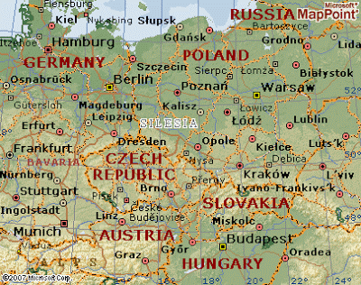
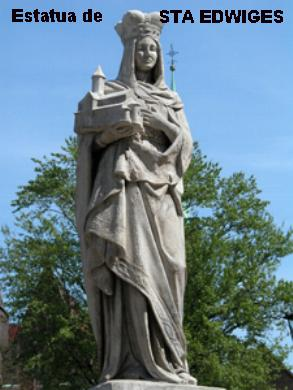

PRELÚDIO

A Vida de Santa Edwiges constitui um marco muito especial na História da Igreja, não só pela diversidade dos acontecimentos, como pela grandeza de sua fé, da sua perseverança no caminho do direito, da justiça, da piedosa misericórdia e do seu imenso amor fraterno.
Desde muito criança revelou grande domínio sobre a sua vontade e, sobretudo, compreendeu os meandros da existência e a verdade da vida. Edwiges entendeu com plena clareza, que as pessoas nascem pela Vontade de DEUS, que infunde em cada ser uma quantidade de dons e virtudes, que cada um saberá reconhecê-los em si mesmo, e deverá utilizá-los também e primordialmente, em benefício das pessoas ou de uma comunidade, para o bem comum e engrandecimento do Reino de DEUS. Por que também, será através do exercício oportuno de seus dons e virtudes, que delineará o seu caminho de santidade na missão da sua vida.
Por outro lado, o que
verdadeiramente impressiona no viver de Edwiges, é a exuberância de sua
existência. Ela nasceu e viveu na opulência e 
Edwiges vivia com a mente em DEUS e tudo o que fazia, realizava sim, para agradar e para a maior honra de DEUS. Sempre ajudou, sempre auxiliou e beneficiou todos que a procurava. Jamais negou qualquer tipo de colaboração, mesmo a financeira, no sentido de amenizar e socorrer aqueles que passavam necessidades ou estavam endividados. E assim ela conduziu a sua existência, num maravilhoso caminho de santidade, tão pura e honesta, que o próprio DEUS agradecido, ainda durante o seu viver terrestre, providenciou e enviou graças, atendendo a intercessão de SUA verdadeira amiga Edwiges, em beneficio dos necessitados.
Nós do APOSTOLADO DOS SAGRADOS CORAÇÕES, sensibilizados com todos os fatos ocorridos na vida de Santa Edwiges, quisemos divulgá-la conscientemente com muito amor e admiração. Por isso mesmo, construímos este Site para lhes proporcionar também as mesmas alegrias e emoções que sentimos, e lhes permitir também apreciar o notável caminho de santidade percorrido por ela, que de tão piedoso e autêntico, invade ternamente todos os corações, ao revelar de maneira inconfundível no âmago do seu coração, a presença verdadeira e adorável de CRISTO, nosso Redentor.
APOSTOLADO DOS SAGRADOS CORAÇÕES
http://www.apostoladosagradoscoracoes.com.br/